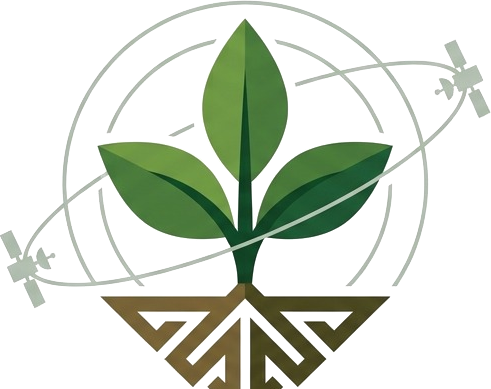
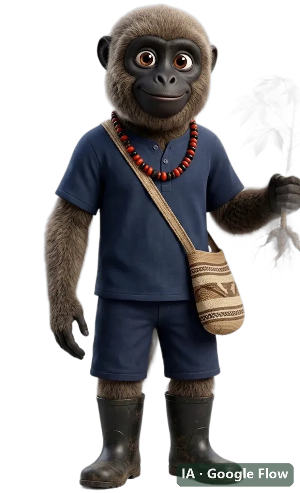

Chonta
Palma · Bactris gasipaes
Palma de fruto que las familias amazónicas cultivan y cosechan.

Willak.spaceNASA Space Apps 2026 · Sangolquí Registrar mi parcelaLo que crece en la chacra
Palma · Bactris gasipaes
Palma de fruto que las familias amazónicas cultivan y cosechan.
Raíz · Manihot esculenta
Base de la comida diaria en la chacra amazónica.
Árbol · Theobroma cacao
Cultivo de sombra que se siembra junto a otros árboles.
Hoja · Ilex guayusa
Hoja con la que las familias kichwa preparan una infusión.
Liana · Uncaria tomentosa
Planta de uso medicinal tradicional del bosque amazónico.
Arbusto · Bixa orellana
Semillas que dan el colorante rojo usado en cocina y pintura.
Fichas por validar con las familias de las chacras.
Satélite en tiempo casi real
Cada vez que abres esta página, el mapa le pide a la NASA (servicio GIBS) la imagen más reciente. Sin cuenta ni clave.
Lo que el satélite no ve: en la Amazonía las nubes tapan muchos días, y un píxel de MODIS mide 250 m a 1 km mientras una chacra mide entre 0,5 y 2 ha. Por eso Willak.space no reemplaza el dato en el terreno: lo acompaña con medidas y relatos de la familia. El clima de POWER es un dato modelado por punto, no una medida hecha en la chacra.
Killa, la luna
Muchas familias agricultoras miran la luna antes de decidir qué hacer en la chacra. Aquí va la fase de hoy; lo que se hace en cada fase lo cuentan las propias comunidades.
Fase calculada con el ciclo medio de la luna (29,53 días), con un margen de unas horas. No es un dato medido.
No encontramos publicado un calendario lunar de las comunidades kichwas de Napo, y no vamos a inventarlo. Lo escriben quienes lo practican: sabias y sabios, familias de las chacras.
Para cada fase preguntamos qué se hace (sembrar, cosechar, podar, dejar descansar), con qué plantas, cómo se dice en kichwa y si la persona autoriza publicarlo.
Lo que escribas se guarda solo en este navegador. Nada se envía a ningún servidor.
Para qué existe
Llevar la imagen satelital y los datos de clima a un lenguaje que una familia agricultora use sin ser especialista.
Poner lado a lado la forma actual de manejar la chacra y al menos otras dos, para ver qué cambia en cada una.
Unir lo que ve el satélite con lo que mide la persona en el terreno y con lo que cuentan las familias, con su consentimiento.
Probar primero en chacras de Napo, con las comunidades, y ajustar antes de pensar en otras zonas.
Tus guías en la chakra
El chorongo (mono lanudo, Lagothrix lagothricha) vive en la Amazonía ecuatoriana. En Willak.space son dos y trabajan juntos, con el saber de la comunidad como tercera voz.
Lee lo que ven los satélites: lluvia, calor, pendiente y verdor. Te dice qué tan seguro es cada dato.

Generado con IA · Google FlowPregunta por lo que se mide y se ve en el terreno, sugiere qué sembrar y arma el informe de trazabilidad.
Nombres por elegir. La vestimenta del chorongo agricultor es una propuesta: falta revisarla con familias kichwas de Napo antes de usarla en público.
Ciencia abierta
Qué datos abiertos de la NASA usa Willak.space, de dónde salen y qué se hizo con inteligencia artificial. Read this in English.
MODIS, IMERG y SRTM piden una cuenta Earthdata, que guarda el servidor del proyecto. En esta demo pública, sin esa cuenta, esos tres se ven con la parcela de prueba (datos ilustrativos, siempre rotulados) y la app usa los respaldos: lluvia de NASA POWER y un modelo de elevación de 90 m.
Suelo: SoilGrids 2.0 (ISRIC). Elevación de respaldo: Copernicus DEM vía Open-Meteo. Mapa base: Esri World Imagery y OpenStreetMap. Código: Leaflet y three.js.
Imágenes y video: las plantas y los dos chorongos se generaron con Google Flow y llevan la marca «IA». El globo es la imagen Blue Marble de la NASA.
Código: se escribió y se probó con ayuda de Claude (Anthropic), revisado por el equipo.
Lo que no es IA: el semáforo, la nota de cada siembra, el plan y las alertas son reglas y fórmulas explícitas, con sus umbrales a la vista en un archivo de configuración.
Código abierto con licencia MIT. Willak.space no está afiliado a la NASA ni cuenta con su respaldo; usa sus datos abiertos.
Prototipo del reto «Field Shift: Adapting Farms with NASA Data». Las imágenes satelitales y el clima de esta página vienen en vivo de la NASA; todo lo demás es de ejemplo hasta validarlo con las comunidades.
Volver al globo